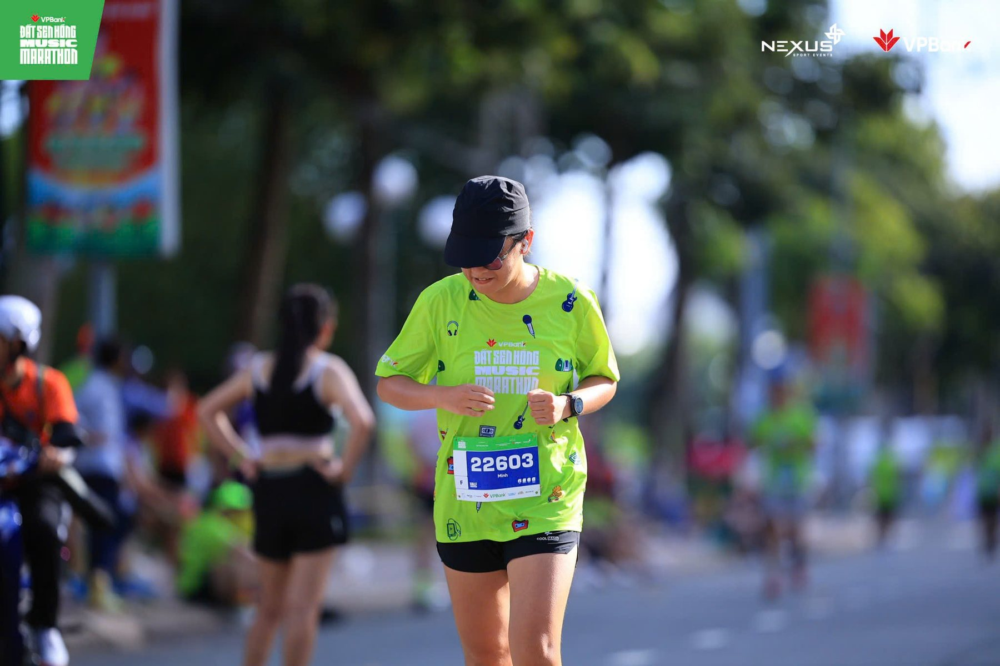

Nov 10, 2026 / 4 min read / #running #mindset
I used to hate running. This year I ran 21 km.
What a year of showing up taught me about discomfort and consistency.
I have to be honest: I used to hate running. Five hundred meters in, I'd be out of breath and wondering why anyone does this for fun.
2026 was a year of a lot of change. Work moved fast, AI was reshaping how we all do our jobs, and I wanted a challenge of my own. Something hard, but not devastating. Something that would push me without breaking me, and that would be good for my health. I already did yoga, so I decided to try the one thing I'd always avoided.
Almost everyone around me was running, and I honestly didn't get it. It looked exhausting. My friends kept telling me the same two things: running teaches you a mindset, and the feeling after a run is the real reward. Fine, I thought. Let's see.
February: just start
One nice morning in February, I went for my first run. I was still exhausted. I still hated it. But somehow, once I had started, I couldn't stop.
The next day that week I picked up my shoes and went again. My route to work passes Sala Park, which is beautiful in the early morning, and skipping it started to feel like a waste. It also helped that I had already told a friend I was going to run. Saying it out loud made it a promise.
One week passed. Then a month. Then three. Around the second month I ran my first 5 km. Three months later, I ran 10.
Running didn't get easier. I just got better at staying with the hard part.

October: 21 km at home
In October I ran my first half marathon, 21 kilometers at the VPBank Đất Sen Hồng Music Marathon, back in my hometown. The whole town felt like a party. Music along the route, people cheering, everyone in bright green. Crossing that finish line, I felt like I had beaten an older version of myself.
A side effect I didn't plan for: I lost weight. Friends I hadn't seen in a while kept stopping me with "Wow, you look so different!" Honestly, I surprised myself too.
What running taught me
The biggest lesson wasn't about fitness. It was about getting comfortable with discomfort. Most things worth doing are not easy, and that's fine. What matters is consistency: you show up, and you do what you said you would do.
I think that's why this matters for my work, too. Designing complex products is a lot like a long run. There's no shortcut, only steady progress and the trust you build by keeping your promises.
My current team is already a healthy bunch, and I love that. Wherever I go next, I'll always look for this same spirit: a place where colleagues lace up together, push each other a little, and celebrate the small finish lines along the way.
If you've been telling yourself you're "not a runner," I was too. Start with 500 meters. Then show up again tomorrow.